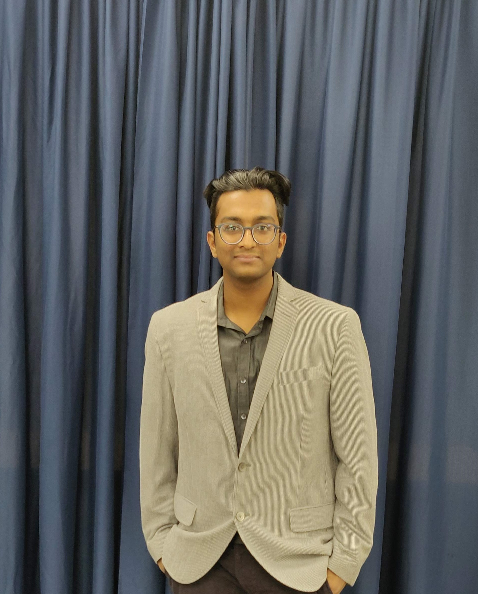
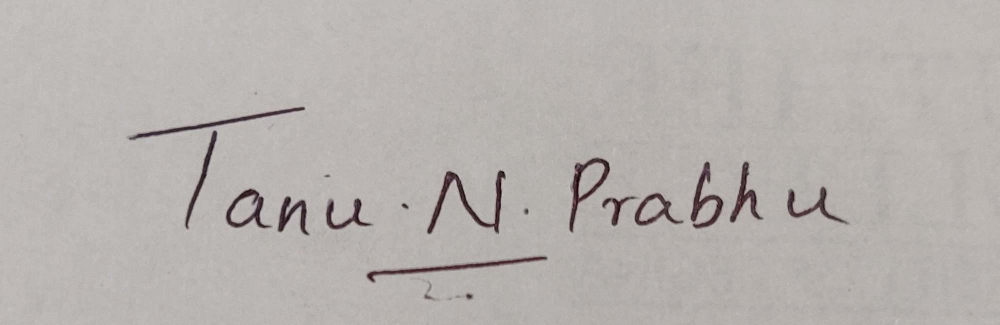
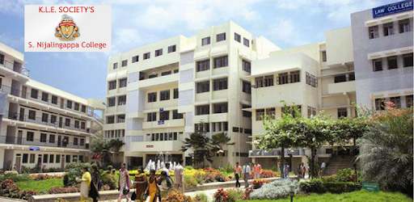
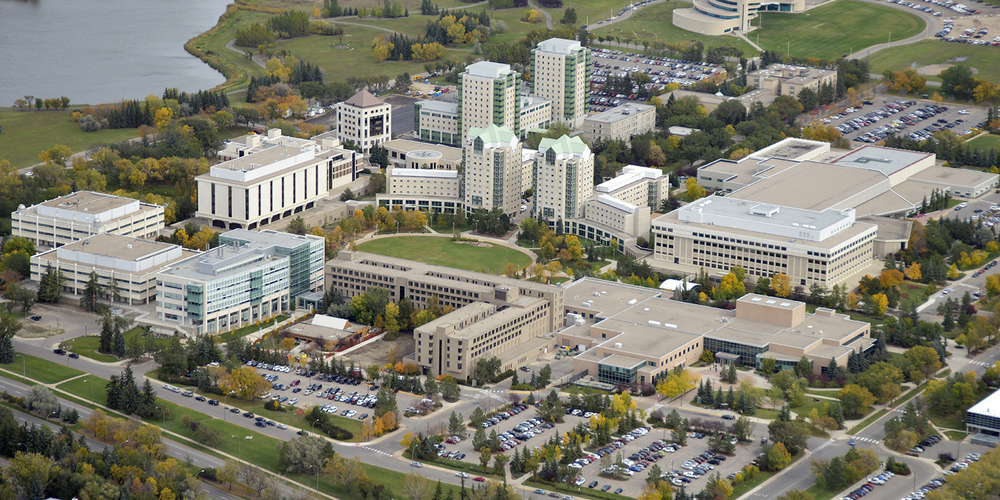

Tanu Nanda Prabhu
About me
This is me, Tanu Nanda Prabhu, I’m doing my Master’s in Computer Science, at the University of Regina, Canada. Although I’m good at programming, definitely not a code monkey. I like to document every line of code and help others understand it. It is very important to document the code. I believe that I learn simultaneously while I also teach. Hence I write tutorials and critique other works and improve it. I live in Luther College Residence at the University of Regina. I was born and brought up in Bangalore, Karnataka, India.
Biography
| Company | Contact |
|---|---|
| Born | 31, May, 1996 or 1 June, 1996 (age 23), Bengaluru, India |
| Residence | Luther College Residence, Room No 251, Regina, Canada |
| Nationality | India |
| Original Residence | #593, Sri Gowri, 6th Block Rajajinagar, Bengaluru, India |
| Occupation | Student (Pursuing Master in COmputer Science at the UofR), Author, Programmer |
| Known for | Writing |
| Title | Computer Scientist (I kept it) |
| Parents | R. Nanda Kumar (Dad), B. Jyothi (Mom) |
| Website | GitHub.com |
| Signature |  |
Early Life
I was born in Bengaluru, Karnataka, India on May 31, 1996. I am the son of R. Nanda Kumar (Dad) and B. Jyothi (Mom). My ancestors are all Indians. My dad was a head chef in ITC Canteen, and my mom is a Business and Product Manager at TMEIC India, located in Bengaluru which is one of the finest companies in India. My grandfather is V. Rama Roa, who was also a Head Chef in ITC Canteen. I do not have any siblings. My family lives in 6th Block, Rajajinagar, Bengaluru. Early in my life, I observed that my parents wanted me to become an Engineer.

At the age of 5, I started my school “St Miras High School” which was in Rajajinagar and was located very close to my residence. During my school days, I was a good student both in terms of my academics and my attitude. Most of my class teachers still remember my name. I graduated from my school when I was in grade 10, and I was one of the top ten students in my school. During my childhood, I did not have any good or best friends, so I did not show any interest in making friends. I am continuing the same thing even today. I graduated my school with a good marks and most of the credit goes to my mom because she spent most of her life in teaching and making me good at his studies, even though I was good in my studies a bit of fine-tuning was required, you know we are human beings we make mistakes, so all my mistakes were corrected by my mom. One thing I have to admit is that my handwriting is just amazing, again credit goes to my mom. My mom made me write 5 pages in a day on a four-lined book to improve my handwriting, even a slight mistake would me him to rewrite the whole page again. This is how my handwriting became so good. Tanu graduated from his school in 2012.

After graduating from my school, I then joined KLE Independent PU College to continue my further studies, I took a major in PCMC (Physics, Chemistry, Maths, and Computer Science). That was a fairly good college, even here I maintained a good reputation. This is where I entered the field of computer science. For the whole year, I did not go to my classes on Saturdays even though Saturday was a working day (Sadly). Rather, I used to study in my domicile. Although I was very interested in computer science, my professors did not teach the subject very well, they always focused on the theory, definitions and nothing about programming and practices. So I ended up just memorizing the definitions and lab programs. I was very good at maths during those days. When the assignments were given I used to solve every problem on the same day. I used to practice hard for all my exams, and I used to keep pestering my professors by asking them hard questions, most of the time the questions started with “Why”, because I was very curious in knowing the answers. I ended up getting good marks in pre-university exams. I graduated from his pre-university in 2014.
After graduating from my pre-university, I then joined Global Academy of Technology, to pursue my Bachelors in Computer Science, this is where my life took an eminence in my career and played a very important role. I did a major in Computer Science and this was a 4-year course. This is one of the top ten engineering colleges in Bengaluru. I was recognized here as one of the best students in the entire college, and they made me the Brand Ambassador of the College. Also in my 3rd semester, I was the third topper for the entire computer science department. Almost all the computer science teacher loved me up to a very great extent, some of them even contact me till now. Especially the principal of the college is my best mentor, he even speaks with me today. I graduated with one of the top marks in the entire college making me one of the best students ever. From here my journey began to pursue my higher studies in Canada, all the teachers, professors, including principle helped me to achieve this. All the semesters I achieved a First Class with distinction consistently with the increment in my results. I was a teacher’s favorite. I bet you till today, you can go to my college and ask about me and there is no surprise that you will adequate answers. I graduated from college in 2018.
Current Life
After graduating from the Global Academy of Technology, I then followed my dream of studying Master in Computer Science, so I then started applying to all the universities across Canada. According to my profile, I applied to the best 8 universities in Canada including Queens, University of Saskatchewan, Dalhousie, University of Ottawa, University of Regina and 3 more. Then I got acceptance from almost 6 universities, and then I decided to go to the University of Regina to pursue my master’s. The University of Regina is located in the city Regina which is the capital city of Saskatchewan, it is one of the best universities in Canada I am in my 3rd semester, and I am living in Luther College Residence at the University of Regina, which is located inside the main campus. This is where my career took a new form, this is where I started to lead an independent life, and started to know more about me and the world. This was the starting point of a new life for me, I discovered his inner abilities to write about programming tutorials; I am now the author of 5 publications such as Towards Data Science, Kotlin Academy, Startup, Analytica Vidhya, Data Science from Scratch. I started to write in July and till now I have written over 20 articles and gained over 100, 000 view and 345 follows within a short period.
Author
Publications
For more details about Tanu's publications visit Publications
Recognition
- In 2014, Tanu was awarded a medal for securing First Class With Distinction
- In 2015, Tanu was awarded a medal for securing First Class With Distinction
- In 2016, Tanu was awarded a medal for securing First Class With Distinction
- In 2018, Tanu was made as brand ambassador of the Global Academy of Technology
- In 2018, Tanu was awarded a momento for being a 4th topper in his entire department
Designed by Tanu Nanda Prabhu